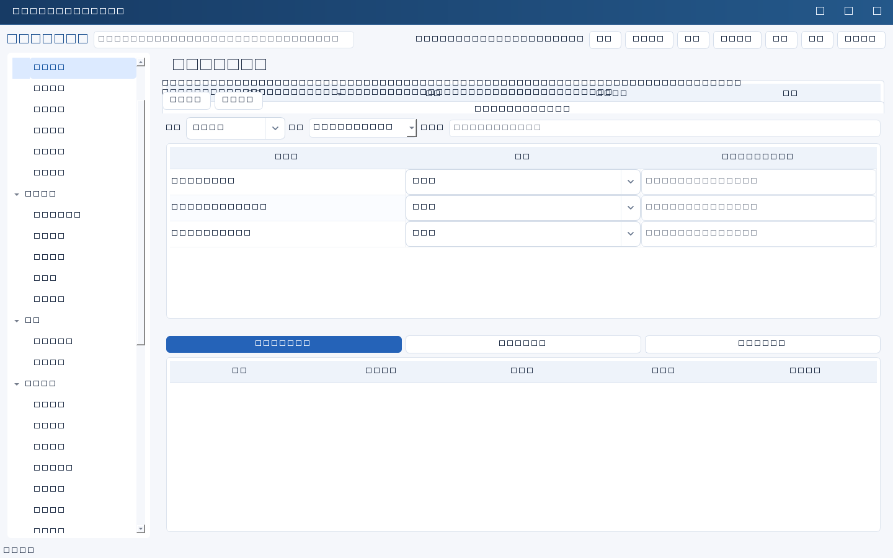
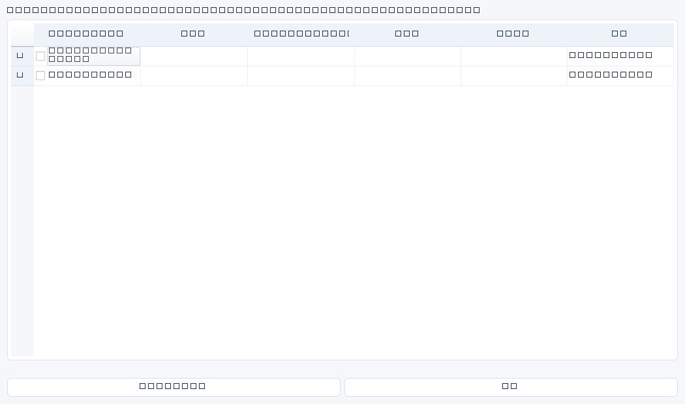

推进任务
任务列表选中记录→推进任务：记录进展、标记阻塞、提交验收、确认完成、延期留痕。进展需下一步，阻塞需原因和解决动作，验收/完成需证据和验收人，延期需新日期、原因及批准人。任务更新与工作日志同事务，保留原期限与版本；终结任务不能直接再次推进。
日常检查
日常工作→日常检查，选择备份运行、入离职权限、合同续费或周度项目检查模板。结果默认待检查，逐项核实后选通过/异常/不适用；异常必须说明。提交前确认异常数量，系统同时建立不可变检查记录、风险和整改任务。之后在任务列表完成整改，保留验收证据；风险关闭仍须人工复核。
检查草稿仅在应用内缓存，切页不丢，但退出程序不保存草稿。网络失败保留请求ID，先查询记录再重试，防止重复建立整改。
关联工作与AI行动
业务列表选择记录→关联工作，可查看关联ID或责任人姓名匹配的事项。同名匹配仅辅助检索，不能替代身份核实。建立后续任务可基于来源建立待执行任务。AI辅助填表结果中点击“选择管理建议，建立正式任务”，默认不选，核实名称负责人日期及验收条件后创建。创建任务不等于批准或发送通知，正式表单保存与建议转任务是独立动作。



